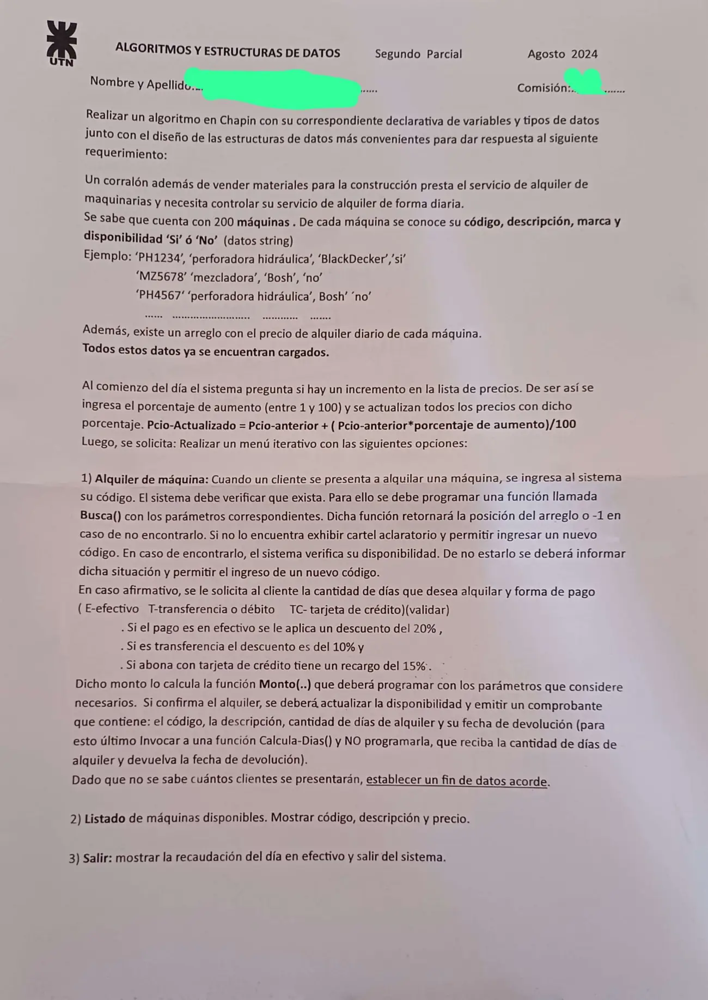

2° parcial, 14/08/2024 (Corralón de máquinas)
2° parcial, 14/08/2024
Enunciado


Propuesta de respuesta
Respuesta no verificada. La propuso Luta Studios con inteligencia artificial y ningún docente la revisó. Puede tener errores.
La hoja pide el diagrama de Chapin. Va un diagrama por módulo, con su declaración de variables arriba, y primero el del programa principal. Si un diagrama no entra en la pantalla, tocalo para verlo completo. Después de los diagramas está el mismo algoritmo en Python, para que lo puedas probar.
Estructuras de datos
| Estructura | Qué guarda | Índices |
|---|---|---|
codigo, descri, marca, disp | Datos de cada máquina, paralelos (ya cargados) | 0 a 199 |
precio | Precio diario de alquiler (ya cargado) | 0 a 199 |
Programa principal, menú y 3) Salir
Al comienzo del día
1) Alquiler de máquina
2) Listado de máquinas disponibles
El mismo algoritmo en Python
Es el programa que se probó, con las mismas sentencias y en el mismo orden que las cajas. Cada Leer del diagrama es un input, convertido a int o float según la declaración, y cada Mostrar es un print.
# Estructuras (ya cargadas, según el enunciado)
# codigo, descri, marca, disp: arreglo [0..199] de str (paralelos)
# precio: arreglo [0..199] de float
codigo = [""]*200
descri = [""]*200
marca = [""]*200
disp = [""]*200
precio = [0.0]*200
def AUMENTO():
# resp: str
# porc: float
# i: int
resp = input("¿Hay incremento de precios? (S/N): ")
while resp != "S" and resp != "N":
resp = input("Responda S o N: ")
if resp == "S":
porc = float(input("Porcentaje de aumento (1 a 100): "))
while porc < 1 or porc > 100:
porc = float(input("Entre 1 y 100: "))
for i in range(200):
precio[i] = precio[i] + (precio[i] * porc) / 100
def Busca(cod):
# cod: str
# i: int
i = 0
while i < 199 and codigo[i] != cod:
i = i + 1
if codigo[i] == cod:
return i
else:
return -1
def Monto(pcio, dias, forma):
# pcio: float
# dias: int
# forma: str
# m: float
m = pcio * dias
if forma == "E":
m = m - m * 20 / 100
elif forma == "T":
m = m - m * 10 / 100
else:
m = m + m * 15 / 100
return m
def PEDIR_MAQUINA():
# cod: str
# pos: int
# Fin de datos: código "*"
pos = -1
cod = input("Código de máquina (* para terminar): ")
while cod != "*" and pos == -1:
pos = Busca(cod)
if pos == -1:
print("No existe esa máquina")
cod = input("Otro código (* para terminar): ")
elif disp[pos] == "no":
print("La máquina no está disponible")
pos = -1
cod = input("Otro código (* para terminar): ")
return pos
def ALQUILER(recaudEfectivo):
# recaudEfectivo, m: float
# pos, dias: int
# forma, conf: str
pos = PEDIR_MAQUINA()
while pos != -1:
dias = int(input("Cantidad de días: "))
while dias <= 0:
dias = int(input("Tiene que ser mayor que 0: "))
forma = input("Forma de pago (E, T, TC): ")
while forma != "E" and forma != "T" and forma != "TC":
forma = input("Tiene que ser E, T o TC: ")
m = Monto(precio[pos], dias, forma)
print("Monto:", m)
conf = input("¿Confirma el alquiler? (S/N): ")
while conf != "S" and conf != "N":
conf = input("Responda S o N: ")
if conf == "S":
disp[pos] = "no"
if forma == "E":
recaudEfectivo = recaudEfectivo + m
print("Comprobante:", codigo[pos], descri[pos], dias, "días, devolución:", Calcula_Dias(dias))
pos = PEDIR_MAQUINA()
return recaudEfectivo
def LISTADO():
# i: int
for i in range(200):
if disp[i] == "si":
print(codigo[i], descri[i], precio[i])
# Programa principal
# opcion: int
# recaudEfectivo: float
AUMENTO()
recaudEfectivo = 0
opcion = 0
while opcion != 3:
print("1) Alquiler de máquina")
print("2) Listado de máquinas disponibles")
print("3) Salir")
opcion = int(input("Opción: "))
while opcion < 1 or opcion > 3:
opcion = int(input("Opción inválida: "))
match opcion:
case 1:
recaudEfectivo = ALQUILER(recaudEfectivo)
case 2:
LISTADO()
print("Recaudación del día en efectivo:", recaudEfectivo)Respuesta no verificada. Puede tener errores.
Se armó con la hoja del examen y la página del 2° parcial (parámetros, arreglos, búsquedas, ordenamiento con arrastre y funciones que solo se invocan). Los arreglos se declaran como en las preguntas frecuentes de los TP 2024. El Chapin sigue la forma de las diapositivas del examen de Historia Clínica de 2019. La fórmula del aumento es la de la hoja.
Quedó en duda: La disponibilidad se compara con si y no en minúscula, como en el ejemplo de la hoja. Si tu archivo trae Si, cambia la comparación. El fin de datos es el código *. Mientras el código no exista o la máquina no esté disponible, se pide otro, como dice la consigna. El descuento o el recargo se aplica sobre el precio diario por los días. Calcula-Dias() se escribe Calcula_Dias, porque un nombre de Python no lleva guion. Se invoca y no se programa. Python no devuelve un entero por parámetro, así que ALQUILER devuelve la recaudación en efectivo actualizada. Si el cliente no confirma, no cambia nada y se pide la próxima máquina. Las diapositivas de la materia no muestran en Chapin la lectura de datos ni la selección múltiple. Acá van como Leer y como Según, con una columna por caso.
¿Cómo te fue?
Marcá cada tema del examen.
- ArreglosArreglos, en 2° parcial
- FuncionesFunciones que el enunciado pide invocar, en 2° parcial
- MenúMenú iterativo, en 1° parcial